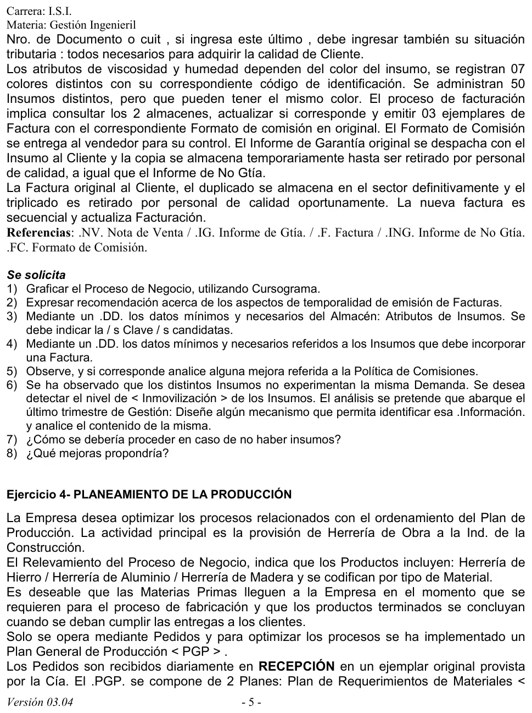
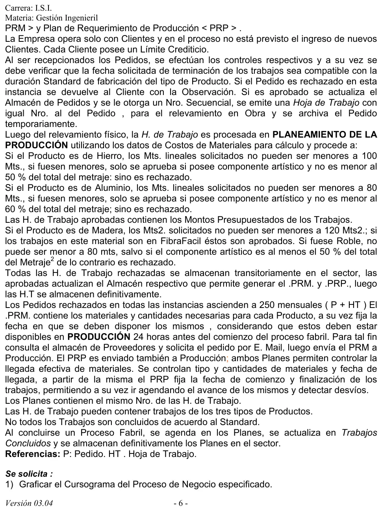
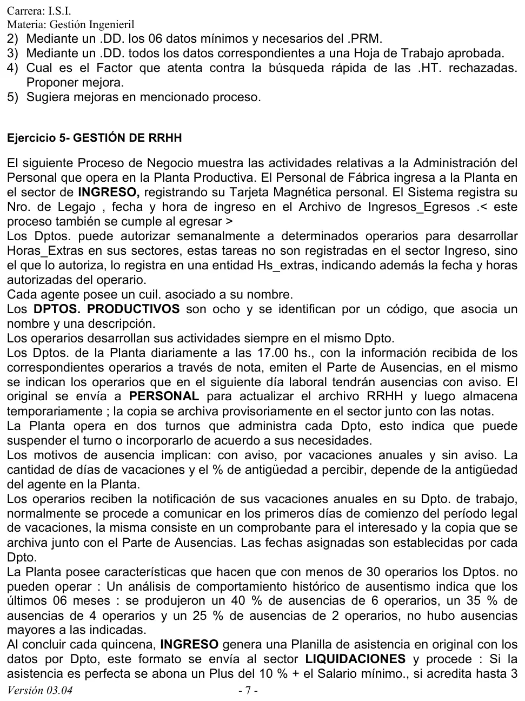

Práctica, ejercicio 4: planeamiento de la producción
Práctica de la cátedra, 2017
Enunciado






Propuesta de respuesta
Respuesta no verificada. La propuso Luta Studios con inteligencia artificial y ningún docente la revisó. Puede tener errores.
1. Cursograma
Una columna por sector, con los símbolos del resumen de un alumno que usa la materia. El relevamiento en obra es un proceso no representado, porque la narrativa no dice quién lo hace. Cada material tiene su propia regla de aprobación, detallada en la tabla de abajo. Las hojas rechazadas se archivan transitoriamente al costado de cada regla. La doble línea entre el PRM y el PRP es la acción conjunta, porque viajan juntos a Producción. El e-mail al proveedor es información, con flecha punteada. Tocá el dibujo para verlo en pantalla completa.
Reglas de aprobación de Planeamiento
| Material | Se aprueba si | Si no llega al mínimo |
|---|---|---|
| Hierro | Pide 100 m lineales o más | Se aprueba solo si tiene componente artístico de al menos el 50 % del metraje |
| Aluminio | Pide 80 m lineales o más | Se aprueba solo si tiene componente artístico de al menos el 60 % del metraje |
| Madera | Pide 120 m² o más | FibraFácil se aprueba siempre. Roble no puede bajar de 80, salvo que el componente artístico sea al menos el 50 % del metraje |
2. DD del PRM
Los seis datos que la narrativa le pide al plan de requerimientos de materiales.
PRM = nro_HT + material(e)
material(e) = cod_producto + cod_material + cantidad
+ fecha_disponible + cod_proveedornro_HT es el número del plan, porque los planes llevan el de su hoja de trabajo. material(e) se repite por cada material de cada producto. fecha_disponible es 24 horas antes del comienzo del proceso fabril que fija el PRP. cod_proveedor sale del almacén Proveedores, al que se le hace el pedido por e-mail.
3. DD de una hoja de trabajo aprobada
Hoja_de_Trabajo = nro_HT + fecha_emision + cod_cliente
+ fecha_terminacion_solicitada + fecha_relevamiento
+ trabajo(e) + monto_presupuestado_total + estado(d)
trabajo(e) = cod_producto + material(d) + (variedad_madera(d))
+ metraje + unidad(d) + (porcentaje_artistico)
+ costo_materiales + monto_presupuestado
material(d) = <hierro | aluminio | madera>
variedad_madera(d) = <FibraFácil | roble | otra>
unidad(d) = <metro lineal | metro cuadrado>
estado(d) = <aprobada>nro_HT es el mismo número del pedido. trabajo(e) se repite, porque una hoja puede tener trabajos de los tres materiales. variedad_madera solo va en madera y porcentaje_artistico solo si el trabajo tiene componente artístico. Los montos presupuestados aparecen solo en las aprobadas, como dice la narrativa.
4. Por qué cuesta encontrar una hoja rechazada
Las hojas rechazadas no se registran en ningún almacén. Las aprobadas actualizan su almacén, pero las rechazadas solo se guardan en papel en un archivo transitorio, sin orden ni índice. Para encontrar una hay que revisarlas a mano. Con unos 250 rechazos por mes, entre pedidos y hojas, eso crece rápido.
Mejora propuesta. Registrar cada rechazo en un almacén de hojas rechazadas, con nro_HT, la fecha, el cliente, el material y el motivo. Así se busca por número, por cliente o por motivo, y el papel pasa a un archivo definitivo ordenado por número.
5. Mejoras al proceso
- Rechazar antes del relevamiento. Los mínimos de metraje se pueden controlar en Recepción, con lo que pide el cliente. Hoy se hace un relevamiento en obra para trabajos que después se rechazan por metraje.
- Avisarle al cliente cuando se rechaza una hoja. La narrativa devuelve el pedido rechazado en Recepción, pero no dice nada del que se rechaza en Planeamiento.
- Una orden de compra en vez del e-mail. El procedimiento de compras del resumen de un alumno pide una orden de compra autorizada y, arriba de cierto monto, al menos tres cotizaciones.
- Cerrar el pedido. El pedido queda en el archivo temporario para siempre. Al concluir el trabajo debería pasar al archivo definitivo.
- Medir los desvíos. No todos los trabajos se terminan en el standard. Registrar cada desvío deja ver qué productos se atrasan y corregir la duración standard con la que Recepción acepta las fechas.
- Copia del pedido para el cliente. El pedido es un único original, así que el cliente no se queda con nada de lo que pidió.
Respuesta no verificada. Puede tener errores.
Se armó con las páginas del parcial y del final, secciones Cursograma, Diccionario de datos, Fallas y mejoras, Procedimiento de compras y Procedimiento de producción.
Quedó en duda: La regla de la madera es confusa. Pide 120 m² como mínimo, aprueba siempre FibraFácil y dice que roble no puede ser menor a 80 «mts», sin aclarar si son metros cuadrados ni cómo se combina con el mínimo de 120. La tabla la transcribe tal cual. La narrativa no dice quién hace el relevamiento en obra ni si al cliente se le avisa del rechazo de una hoja. Los seis datos del PRM se eligieron con lo que la narrativa dice que contiene. El cursograma y el DD salen de material de alumnos.